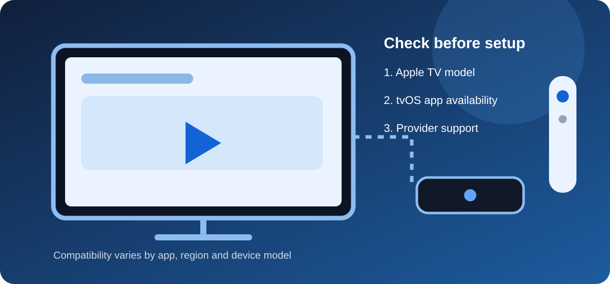

IPTV on Apple TV: Compatibility and Setup Guide
Author: IPTV Guide UK · Last updated: 2026-11-19
Apple TV can be used for internet-delivered television when a suitable app and service are available for your device and region. Compatibility is not universal: check the exact Apple TV model, tvOS version and the provider's current instructions before subscribing.

Check compatibility first
- Identify your Apple TV model and installed tvOS version.
- Search the Apple App Store on the device for the app named by the provider.
- Confirm the app is available in your Apple Account region.
- Ask the provider whether it supports your exact model and sign-in method.
- Check whether any required subscription is separate from the player app.
General setup steps
- Update tvOS using Apple's built-in Software Updates settings.
- Install apps only from the official App Store.
- Open the app and follow its official setup instructions.
- Enter service details only in the intended app and never share credentials publicly.
- Test on a stable home network and review the app's privacy permissions.
If an app is unavailable
Do not assume that an iPhone or iPad app can be installed on Apple TV. Ask the developer or provider about supported platforms and use only supported installation methods. Avoid unofficial profiles, unknown configuration files or instructions that require disabling device security.
For an example of a provider's own published service information, see the Kemo TV website . This is a promotional external link, not confirmation that Kemo TV supports Apple TV or an endorsement of its service; verify device compatibility and service details directly before subscribing.
Network tips
Use a reliable Wi-Fi connection or Ethernet where your Apple TV model supports it. If playback buffers, compare performance on another device, restart your router and check whether other household activity is using bandwidth. See our internet requirements guide and buffering troubleshooting guide.
For current provider-published details, you can also check the Kemo TV website . This promotional link is not confirmation of Apple TV compatibility or an endorsement; verify all device and service details directly.
After installing the app: finish setup safely
- Confirm the app supports your Apple TV model and tvOS version. Do not assume an iPhone or iPad app is also available for Apple TV.
- Open the app and choose its supported import method. The app may accept an M3U playlist, a provider login or another method; use only the option documented for your account.
- Enter provider-issued details exactly. Check the complete address and each field before submitting. Never use credentials copied from public examples.
- Wait for the playlist to finish importing. If the app shows an error, note the exact wording and check the provider account status.
- Configure guide data if supplied. EPG schedules may need a separate source or refresh, depending on the app. A player cannot create missing programme data.
- Test the network and playback. Try another stream and another app to determine whether the issue is limited to one source or the whole device.
Apple TV setup troubleshooting
| Problem | Practical check |
|---|---|
| App is missing from the App Store | Check the exact Apple TV model, tvOS version and Apple Account region. Ask the developer whether the app has a tvOS version. |
| Login details are rejected | Confirm the account is active and that the selected login method matches the details supplied by the provider. |
| Channels load but listings are missing | Ask whether EPG data is included, then check the app's guide-source and channel-mapping instructions. |
| Playback pauses or freezes | Compare another stream and another streaming app, then test Wi-Fi or supported Ethernet connectivity. |
Keep credentials private: An M3U URL may contain access tokens. Do not post it in a screenshot, public forum or online playlist checker.
Frequently asked questions
Does every IPTV app work on Apple TV?
No. App developers decide which Apple platforms they support. Check the App Store listing and provider documentation for the exact model and tvOS version.
Does installing a player provide TV channels?
Not necessarily. A player app and a content provider are different things. Confirm the provider's authorisation, availability and subscription terms independently.
Is this an endorsement of a provider?
No. IPTV Guide UK is an independent educational resource and does not certify providers, apps or content rights.
Explore more: IPTV Guide UK · UK IPTV guide · Device guide · App guide